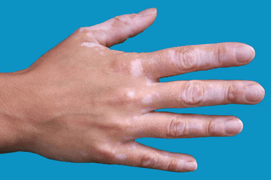

Vitiligo is a condition in which areas of skin lose their normal pigment and so become white. It is common, and affects about 1% of the world’s population.

There is no medical evidence of any dietary link and vitiligo. Therefore no dietary changes are recommended.
Vitiligo occasionally goes away by itself, and some treatments may slow its progress, but a cure cannot be guaranteed.